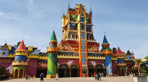
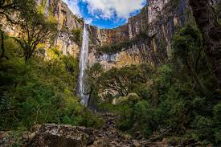

A Praia Central de Balneário Camboriú é o principal ponto turístico de Balneário Camboriú, no litoral de Santa Catarina. Com cerca de 6,8 km de extensão, destaca-se pela ampla faixa de areia, mar de águas claras e pelos arranha-céus que acompanham toda a orla. O local oferece ótima infraestrutura, com calçadão, ciclovia, bares e restaurantes, sendo um dos destinos mais visitados do sul do Brasil.

Localizado no município de Penha, é o maior parque temático da América Latina. O complexo oferece diversas atrações, como montanhas-russas, shows ao vivo e áreas temáticas inspiradas em personagens e filmes, atraindo visitantes de todo o país.

Situadas em Urubici, na Serra Catarinense, as Cataratas do Avencal possuem aproximadamente 100 metros de queda d’água. O local é conhecido pela paisagem natural impressionante, trilhas ecológicas e atividades de aventura, sendo um dos principais atrativos da região serrana.